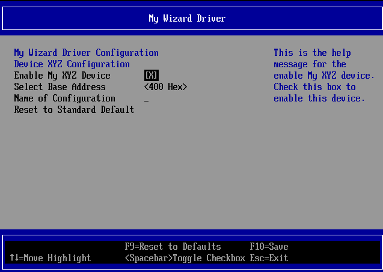
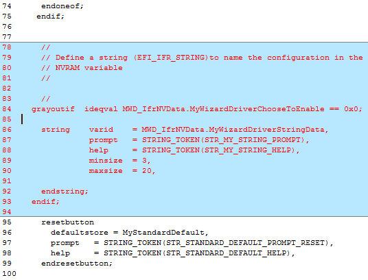
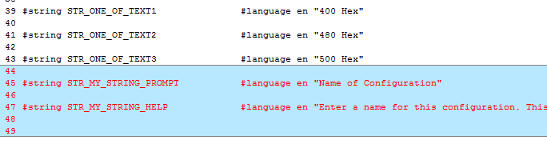
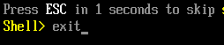
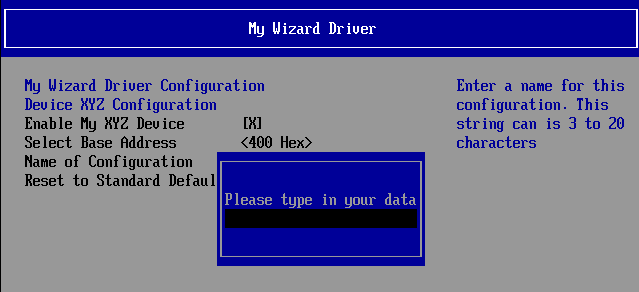
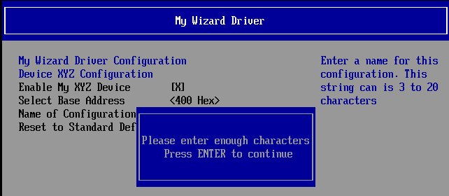
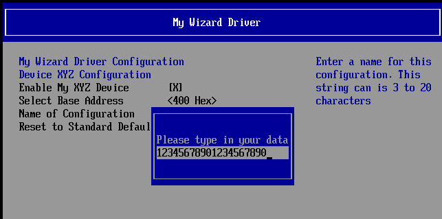
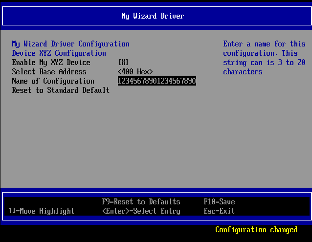
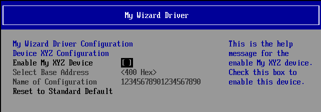
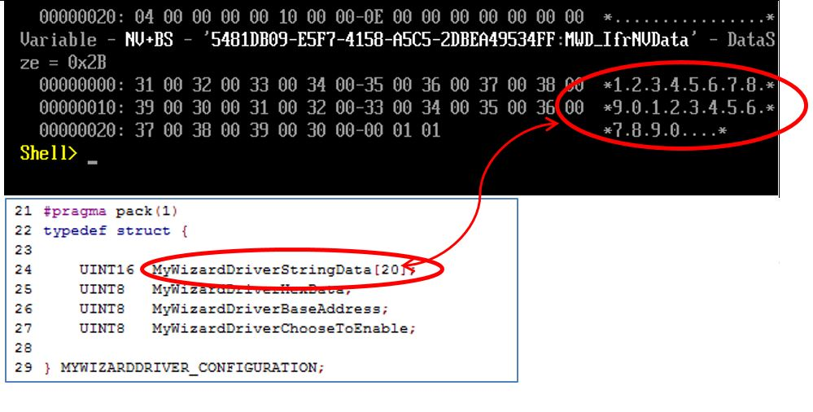

Lab 6. Updating the Menu: Creating a String to Name a Saved Configuration
In this lab, you’ll create a string to name a saved configuration that will be stored into the NVRAM variable space. This lab uses the VFR term “string” to prompt the user to enter a string value. The VFR can determine the minimum and maximum number of characters of the string length with the terms “minsize” and “maxsize”. Since there is also an enable/disable switch, the VFR can use the “grayoutif” term again to allow or disallow changes to this field.

Figure 6 : Menu with a string item
- Update the MyWizardDriver.vfr file
- Add the following code to the location at approx. line 77 and before the “
resetbutton” item (as shown below):
// // Define a string (EFI_IFR_STRING) to name the configuration in the // NVRAM variable // grayoutif ideqval MWD_IfrNVData.MyWizardDriverChooseToEnable == 0x0; string varid = MWD_IfrNVData.MyWizardDriverStringData, prompt = STRING_TOKEN(STR_MY_STRING_PROMPT), help = STRING_TOKEN(STR_MY_STRING_HELP), minsize = 3, maxsize = 20, endstring; endif; - Save MyWizardDriver.vfr
- Update MyWizardDriver.uni
- Add the following code to the bottom of the file:
#string STR_MY_STRING_PROMPT #language en "Name of Configuration"
#string STR_MY_STRING_HELP #language en "Enter a name for this configuration. This string can is 3 to 20 characters"

6). Save MyWizardDriver.uni
Build and test MyWizardDriver
- Open the Visual Studio Command Prompt
- Type build
- Type build run
- At the UEFI Shell prompt,type exit
 - Now at the setup front page menu, select “Device Manager”
- Inside the Device Manager menu press the down arrow to “My Wizard Driver Sample Formset” Press "Enter"
- Select “Name of Configuration” then Press “Enter”
Notice the string text pop up menu gets displayed.  - Test the “
minsize” by only typing your choice of a two character string. Then Press “Enter”
Notice the an error message validating that you need to enter at least three or more characters.  - Press “Enter” to clear the message
- Press “Enter” again to re-enter pop up menu
- Test by typing more than “
maxsize” of 20 characters** Then Press “Enter” .
Notice** that the Browser only allows the maximum number of 20 characters to be entered with a forced stop. There is no error message but no more characters are allowed to be typed into the pop up menu.  - Press “Enter”
Notice that the “Configuration changed” message is displayed  - Test the
grayoutifby selecting “Enable My XYZ Device” - Press the “Spacebar” to toggle off/disable. Then Press the “Spacebar” again to Enable.
Notice that the “Select Base Address” and “Name of Configruation” fields are now grayed out and not selectable  - Press “F10” to save.
- Press “Escape” to exit
- Press “Escape” to exit the “Device Manager”
- Select “Continue” and then Press “Enter”
- At the Shell Prompt, type
dmpstore -all
Notice the unicode string “12345678901234567890” (or the 20 character value you typed) is now stored because you entered those characters in the HII form menu. This is because the fileWizardDriverNVDataStruc.hhas the data structure stored in NVRAM with the GUID define nameMWD_IfrNVDataof typeMYWIZARDDRIVER_CONFIGURATION. Notice that string data is the first 20 bytes in the data structureMWD_IfrNVData.MyWizardDriverStringData.  - Type “reset” and then “Enter" at the Shell prompt to return to the Visual Studio Command Prompt

For any build issues copy the solution files from C:\Fw\LabSolutions\LessonE.6
NOTE: Del Directory C:\fw\edk2\Build\NT32IA32\DEBUG_VS2010x86\IA32\MyWizardDriver before the Build command to build the MyWizardDriver Clean.